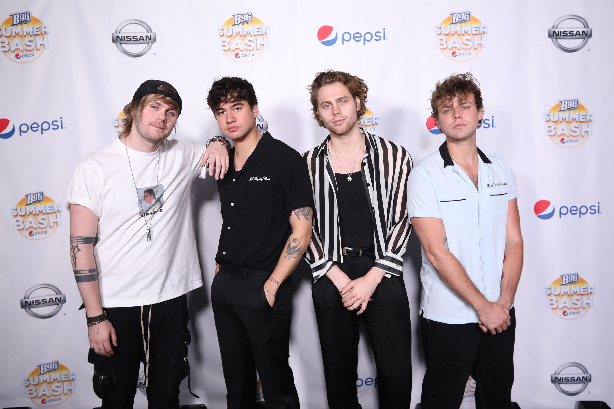

5 Seconds of Summer comenzó el 3 de diciembre de 2011. Luke Hemmings, Michael Clifford y Calum Hood, quienes estudiaban en el Norwest Christian College, comenzaron a publicar vídeos de ellos mismos haciendo versiones de canciones populares en el canal de YouTube de Hemmings. El primer vídeo de Luke es una versión de la canción de Mike Posner, «Please Don't Go» , fue publicado el 3 de febrero de 2011. Su cover de la canción de Chris Brown, «Next to You» recibió más de 600 000 visitas. En diciembre de 2011, se unió a la banda Ashton Irwin, y la banda se completó.
La banda atrajo interés de grandes sellos discográficos, y firmaron con Sony ATV Music. Su primer lanzamiento musical fue un EP titulado Unplugged. Su popularidad se originó cuando atrajeron la atención de Louis Tomlinson, integrante de One Direction, al publicar en su cuenta de Twitter un vídeo de su canción «Gotta Get Out» , diciendo que había sido fanático de 5 Seconds of Summer "desde hace tiempo". 5 Seconds of Summer atrajo nuevamente la atención de One Direction tras el lanzamiento de su primer sencillo, «Out of My Limit» , el 19 de noviembre de 2012, esta vez con Niall Horan publicando un tuit del vídeo musical.
5 Seconds of Summer pasó la segunda mitad de 2012 escribiendo y desarrollando su sonido con Amy Meredith, con quien escribieron dos canciones que estuvieron en el EP Somewhere New: «Beside You» y «Unpredictable» . El EP también fue coproducido por Joel Chapman. 5 Seconds of Summer lanzaron su primer sencillo «Out of My Limit» el 19 de noviembre de 2012, el vídeo musical de la canción recibió más de 100 000 visitas en las primeras 24 horas. En diciembre de 2012, la banda se embarcó a un viaje a Londres, en donde han escrito con varios artistas como McFly, Roy Stride de Scouting for Girls, Nick Hodgson de Kaiser Chiefs, Jamie Scott, Jake Gosling, Steve Robson y James Bourne de Busted.
2013-2104: 5 Second of Summer LIVESOS
El 14 de febrero de 2013, se anunció que la banda sería telonera de One Direction, para su gira Take Me Home. La gira empezó en el O2 Arena en Londres el 23 de febrero de 2013, y 5 Seconds of Summer se unió a One Direction para ir a Reino Unido, Estados Unidos, Australia y Nueva Zelanda, incluyendo 7 shows en el Allphones Arena en la ciudad natal de la banda, en Sídney. Mientras estaban en un descanso de la gira Take Me Home, 5 Seconds of Summer regresaron a Australia en donde tocaron una gira nacional, con todas las fechas vendiéndose en minutos. Fue cuando la banda empezó a ganar popularidad y se hizo conocida. El 21 de noviembre de 2013, la banda anunció que habían firmado con el sello discográfico Capitol Records, y dos meses y medio después, el 5 de febrero de 2014, lanzaron su primer sencillo mundial, «She Looks So Perfect» para pre-ordenar en iTunes.
La conexión entre 5SOS y One Direction se extiende a que ambos artistas son dirigidos por la agencia londinense Modest Management. Esto ha hecho que la prensa se refiera a 5SOS como una boy band a pesar de que los integrantes de la banda han declarado en varias ocasiones que no lo son, y que no tienen lo cliché de estas. A diferencia de la mayoría de las boy bands, ellos escriben sus propias canciones, tocan sus propios instrumentos y no son principalmente un grupo de baile.Sin embargo, la agrupación ha atraído a una gran cantidad de fanáticas como otras boy bands. Ante esto, Ashton Irwin ha comparado a sus seguidoras con las de Fall Out Boy, que también son predominantemente femeninas. John Feldmann, líder de Goldfinger y productor de 5 Seconds of Summer atribuye dicha fanaticada a «un cambio fundamental en la demografía pop punk», mencionando el alejamiento gradual del público masculino de actos pop punk de principios de los 90s tales como Blink-182 y Green Day.
A finales de marzo de 2014, «She Looks So Perfect» fue lanzado en Reino Unido. A pesar de que se mantuvo únicamente un día en lo más alto de la tienda británica iTunes y para el final de la semana acabó al final del top 10, 5 Seconds of Summer se convirtió en la cuarta banda australiana en tener un sencillo número uno en Reino Unido, y la primera en lograrlo en 14 años. En la semana posterior a su lanzamiento la canción descendió al puesto diez, lo que constituyó la mayor caída de un número uno desde «Baby's Coming Back/Transylvania» de McFly que bajó de la primera posición a la veinte, también en su segunda semana en listas.
El 5 de marzo de 2014, se anunció que 5 Seconds of Summer se uniría nuevamente con One Direction, siendo teloneros en su gira llamada Where We Are Tour en Estados Unidos, Canadá, Reino Unido y Europa. El 9 de abril de 2014, el EP She Looks So Perfect debutó en el número 2 en Billboard 200.
El 13 de mayo de 2014, la banda anunció que su primer álbum, llamado 5 Seconds of Summer, sería publicado el 27 de junio de 2014 en Europa y Australia con otras fechas por ser anunciadas. El disco debutó en la primera posición en las listas Billboard 200 y Digital Albums, asimismo alcanzó el número uno en 13 países y se posicionó dentro del top 10 en otros 26 territorios. El 15 de junio la banda lanzó su cuarto EP Don't Stop, el cual no estuvo disponible tanto en Estados Unidos como en Canadá y México.
El 15 de julio la banda publicó su tercer sencillo «Amnesia», el cual fue la única canción que no fue escrita por los miembros de la banda, sino por Benji y Joel Madden de Good Charlotte. El 5 de septiembre de 2014, el grupo lanzó su quinto EP Amnesia.
El 12 de octubre lanzaron su cuarto sencillo «Good Girls», cuyo video musical alcanzó más de dos millones de visitas en 48 horas, siendo su mayor récord. El 16 de noviembre de 2014 publicaron su sexto EP Good Girls. Además, publicaron una versión de la canción «What I Like About You» de la banda de rock estadounidense The Romantics como el primer sencillo de su álbum en directo LIVESOS, el cual fue posteriormente publicado el 15 de diciembre de 2014.
2015-2016: Sounds Good Feels Good
En mayo de 2015 la banda se embarcó en su primera gira como artistas principales, el Rock Out with Your Socks Out Tour, que tendría presentaciones en Europa, Australia, Nueva Zelanda y Norteamérica. El 17 de julio de 2015 lanzaron su primer sencillo «She's Kinda Hot», que forma parte de su segundo álbum de estudio. El 12 de agosto de 2015, la banda anunció que su segundo álbum de estudio se llamaría Sounds Good Feels Good. Este fue publicado mundialmente el 23 de octubre de 2015. El 28 de agosto de 2015 la banda lanzó su séptimo EP She's Kinda Hot solamente para Reino Unido e Irlanda. El 14 de septiembre de 2015 publicaron su segundo sencillo «Hey Everybody!». La revista TIME de Estados Unidos la consideró la tercera mejor canción de 2015.
El 9 de octubre de 2015, la banda anunció que su gira Sounds Live Feels Live World Tour sería en 2016, e incluiría fechas en Asia, Reino Unido, Irlanda, y Norteamérica. El 17 de diciembre del mismo año estrenaron el tema «Jet Black Heart», la pista obtuvo el premio a Mejor vídeo musical del verano en los Premios MTV y como Mejor canción de Rock en los Teen Choice's.
El 3 de junio de 2016 la banda anunció que su próximo sencillo sería «Girls Talk Boys». Esta canción está incluida en la banda sonora de la película Cazafantasmas, siendo publicada el 15 de julio de 2016. La banda empezó su gira mundial llamada Sounds Live Feels Live World Tour.
2017- 2018: Youngblood
El 13 de enero de 2017 se lanzó la canción «Take What You Want» de la banda de rock japonesa One Ok Rock, que incluye una colaboración con 5SOS. Entre agosto y septiembre de 2017 la banda realizó un tour de «verano» por Asia y Sudamérica, incluyendo países como Argentina, Brasil, Chile y Perú a los cuales fueron por primera vez. El último festival de música que tocaron ese año fue Rock in Rio en Brasil.
Para la promoción del próximo álbum de estudio de la banda, el 22 de febrero de 2018 lanzaron su primer sencillo «Want You Back», además de anunciar fechas para su próxima gira. La canción fue lanzada junto con el anuncio de sus fechas promocionales de la gira 5SOS III Tour.El 9 de abril de 2018 anunciaron que su tercer álbum de estudio, Youngblood, sería publicado el 22 de junio de 2018. Tres días después estrenaron el segundo sencillo del álbum del mismo nombre «Youngblood». Alcanzó el primer puesto en las listas de Australia en mayo de 2018, convirtiéndose en el segundo sencillo número uno de la banda en su país natal, manteniéndose ocho semanas consecutivas en la cima. La pista logró el lugar número uno en las listas de Nueva Zelanda. Alcanzó el top diez en once países, incluido el número tres en Canadá, el cuatro en el Reino Unido y el siete en los Estados Unidos, convirtiéndose en su primer sencillo que alcanza el top diez tanto en Canadá, como en Estados Unidos.
Posterior a ello, fueron estrenados los dos últimos sencillos del álbum «Valentine» que se estrenó el 26 de agosto de 2018.«Lie to Me» fue lanzada como sencillo el 21 de diciembre de 2018 en colaboración con la cantante estadounidense Julia Michaels quien formó parte de la composición de la canción.
2019-2022: Calm
El 17 de mayo de 2019 la banda publicó una serie de vídeos en las redes sociales, mostrando adelantos del próximo video musical de la canción «Easier» junto con su nombre y fecha de lanzamiento. Cinco días después fue estrenada como el sencillo principal de su próximo cuarto álbum de estudio.74 Alcanzó la posición cuarenta y ocho en la lista Billboard Hot 100 de Estados Unidos. El segundo sencillo «Teeth» lanzada 21 de agosto de 2019, formó parte de la banda sonora de la serie de Netflix 13 Reasons Why. El 5 de febrero la banda anunció por las redes sociales su nuevo material discográfico Calm.Unos días antes, también confirmaron que se embarcarán en la gira No Shame para apoyar la promoción del álbum. Ese mismo día, se lanzó el sencillo «No Shame» como el tercer sencillo de la nueva producción. Ambos sencillos se ubicaron en cuarta y duodécima posición en la lista Bubbling Under Hot de Billboard.
El 16 de febrero de 2020, la banda actuó en Fire Fight Australia, un concierto televisado en el ANZ Stadium de Sídney para recaudar fondos para el alivio de incendios forestales. Su actuación, que incluyó la primera presentación en vivo de «No Shame», fue ampliamente elogiada, con Billboard escribiendo «Se criaron jugando en estadios y, como tal, fueron, quizás sorprendentemente, el acto de calentamiento perfecto para Queen». El 21 de febrero se estrenó «Old Me» como el cuarto sencillo del álbum, el tema presenta como voz principal la de Luke Hemmings, quien interpreta las letras que hace referencia a su pasado y todo lo que sucedió en su vida para convertirse en lo que es hoy.El 25 de marzo de 2020, dos días antes del estreno de su nuevo material discográfico, lanzaron el quinto sencillo «Wildflower», tema que alcanzó la posición ochenta y uno en UK Singles Chart del Reino Unido.
Calm Se lanzó el 27 de marzo de 2020, a través de Interscope Records.Debido a un error de iTunes en la hora de su lanzamiento, alrededor de 10 000 copias del álbum fueron lanzadas en la media noche del jueves en Estados Unidos, cuando inicialmente se tenía programado el día viernes para completar una semana completa en la lista Billboard. En su segunda semana, el álbum fue promocionado con paquetes de mercadería vendidos en el sitio web del grupo, así como ofertas de canje de boletos, lo que le permitió alcanzar la segunda posición esa semana en la lista. En el Reino Unido debutó en la primera posición, por delante del álbum Future Nostalgia de Dua Lipa convirtiéndose en su segundo álbum número uno en el país, desde el lanzamiento de Sounds Good Feels Good (2015).
2022: 5SOS5
El 2 de marzo de 2022, la banda lanzó "Complete Mess" como el sencillo principal de su próximo quinto álbum de estudio. El segundo sencillo, "Take My Hand", se lanzó el 1 de abril de 2022. El tercer sencillo, "Me, Myself & I", se lanzó el 11 de mayo de 2022. En mayo de 2022, la banda anunció su quinto álbum de estudio 5SOS5. que se ha lanzado el 23 de septiembre de 2022. El álbum será el primero de la banda bajo BMG Rights Management. El cuarto sencillo, "Older", se lanzó el 7 de septiembre de 2022.
El álbum se compone de 19 canciones de las cuales el sencillo "Older" es colaboración con Sierra Deaton, actual pareja del vocalista principal. A destacar es la canción número 17, "Emotions", producida por completa por Michael Clifford. Ellos mismos han declarado en entrevistas que este álbum es un giro total a la estética de los anteriores, siendo este último mucho más íntimo y cercano a ellos.
 A finales de marzo de 2014, «She Looks So Perfect» fue lanzado en Reino Unido. A pesar de que se mantuvo únicamente un día en lo más alto de la tienda británica iTunes y para el final de la semana acabó al final del top 10, 5 Seconds of Summer se convirtió en la cuarta banda australiana en tener un sencillo número uno en Reino Unido, y la primera en lograrlo en 14 años. En la semana posterior a su lanzamiento la canción descendió al puesto diez, lo que constituyó la mayor caída de un número uno desde «Baby's Coming Back/Transylvania» de McFly que bajó de la primera posición a la veinte, también en su segunda semana en listas.
A finales de marzo de 2014, «She Looks So Perfect» fue lanzado en Reino Unido. A pesar de que se mantuvo únicamente un día en lo más alto de la tienda británica iTunes y para el final de la semana acabó al final del top 10, 5 Seconds of Summer se convirtió en la cuarta banda australiana en tener un sencillo número uno en Reino Unido, y la primera en lograrlo en 14 años. En la semana posterior a su lanzamiento la canción descendió al puesto diez, lo que constituyó la mayor caída de un número uno desde «Baby's Coming Back/Transylvania» de McFly que bajó de la primera posición a la veinte, también en su segunda semana en listas.